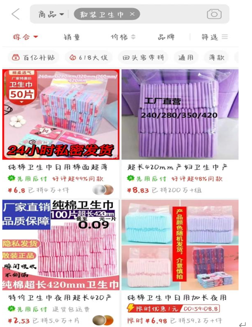
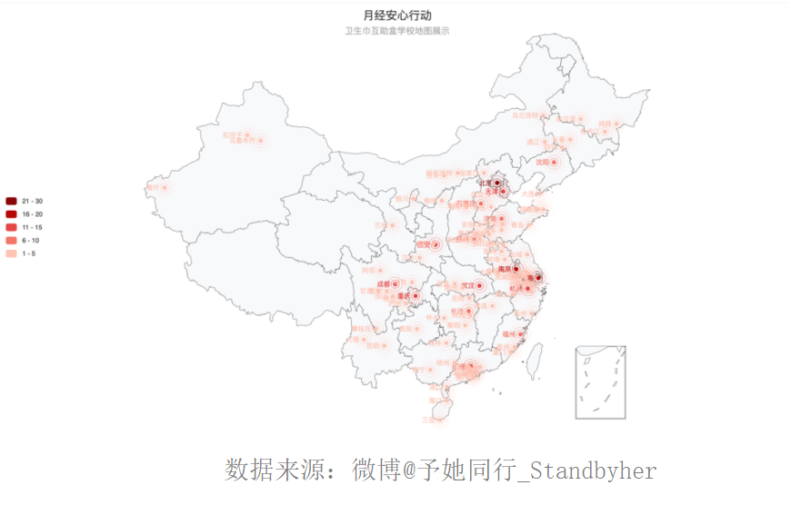

被忽视的困境——月经贫困
月经贫困是什么
一、月经贫困：
月经贫困是一个国际性话题，它指的是：女性因经济负担能力不足或受落后观念等因素制约无法在经期内得到足够的卫生用品，从而无法有尊严地度过生理期。
二、有关月经贫困的社会事件：
北京青优社会工作发展中心（UU公益）创始人王文娟带领团队在云南进行贫困山区助学活动，发放书包时，一位名叫丹丹的女孩带着哭腔对志愿者说：“老师，我不要书包，您能给我一包姨妈巾吗？”丹丹那年上初二，母亲因病去世，父亲在外打工。她和爷爷奶奶以及弟弟一起生活，每日要走很远的山路去上学，课余帮家里干农活、照顾弟弟。每月一次的例假对她来说是一件非常难堪的事情，她只能从零花钱里挤出一点来到镇上买劣质的卫生巾。大多数时候，破布条、卫生纸、作业纸……就是她的“卫生巾”，时间久了就感觉到身体不舒服。在王文娟的坚持下，丹丹同意让志愿者带她去医院检查，才发现14岁的她已患上了妇科病。
三、月经贫困的表现
联合国妇女署在《世界妇女进展报告》指出：全球共有12.8%的女性生活在极端贫穷中，无法负担起卫生巾。研究团队“月经时刻”曾做过详细的估算：假设一位女性每月经期为6天，每天更换3次卫生巾，以夜用卫生巾平均每片1.5元计算，一年要花费324元。以“经期花费占家庭年收入超过5%”为月经贫困的标准，则我国约有519万家庭在经历月经贫困。在美国，女性一年要花费至少20亿美元在经期产品上。
1、针对美国青少年的调查显示，约有23%的少女有经期用品购买困难，如图
2、因为卫生巾昂贵无钱购买，肯尼亚贫困女孩用性换取卫生巾，如下图
3、在我国，半数以上的女性认为购买卫生巾是一种经济负担，如下图
四、月经贫困的影响
健康和卫生问题：使用不合适的卫生用品或材料可能导致皮肤刺激、感染和其他健康问题。缺乏适当的卫生环境，如干净的厕所和洗手设施，也加剧了这些问题。这可能导致女性在经期使用质量差、不透气的材料作为替代，从而增加了感染和妇科病的风险。
教育机会受限：在一些地区，月经贫困导致女孩因无法购买卫生用品而错过学校课程，从而影响她们的教育机会。例如，在印度，有数据显示每年有超过13.7万名女孩因为买不起卫生用品而辍学。
心理压力增加：月经贫困的女性可能面临心理压力和自卑感，因为她们无法像其他人一样正常管理月经。这也可能导致她们在社交和日常生活中感到不自在和孤立。
生活质量下降：月经贫困不仅影响女性的生理健康，还可能导致她们的生活质量整体下降。缺乏适当的卫生设施、卫生用品以及由此产生的心理压力和社交障碍都可能对女性的整体福祉产生负面影响。
是谁导致了月经贫困？
女性的月经期平均为40年，平均每个月5天的经期，则一位女性一生要经历2400天的月经，假使每天使用5片卫生巾，每片卫生巾1.5元且几十年内价格不变，则一共要花至少1.8万元。
高昂的价格背后是？
一、税率
税率与卫生巾的售价有很大的关联。与其他成本一样，卫生巾的征收税率被商家分摊在售价里，被称为“月经税”。因此，“月经税”越高，卫生巾售价就越贵。在中国，卫生巾的征用税率是13%，属于增值税里最高的一档。在下列国家对卫生巾税率中，我国排在第二位。
截至2021年，全球范围内已经有包括英国、乌干达、爱尔兰、肯尼亚、南非、坦桑尼亚、加拿大、牙买加、印度、黎巴嫩、马来西亚、哥伦比亚、尼加拉瓜、卢旺达、美国的10个州等超过15个国家和地区免除了“月经税”的征收。
最近呼吁卫生巾免税的话题在我国热度高涨，虽然卫生巾免税并不一定会使卫生巾价格降低，也不代表就可以解决月经贫困这一难题，但是免税是非常重要也是非常正当的一步，人没有必要因为自己属于某种性别而交额外的税。卫生巾免税话题的背后是隐匿的看不到的女性需求，我们呼吁卫生巾免税正是将这些处于暗处的女性拉出来的一把有效的探照灯。
二、成本造价
卫生巾行业有一个非常明显的特点：毛利率很高，净利率很低。 卫生巾的制造成本很低，原材料主要是膜、吸收体（无纺布、高分子树脂、无尘纸、绒毛浆等），占了80%的成本，而且工艺也比较简单。但是行业平均毛利率水平却高达45%，特别是恒安国际（七度空间）在2021年的卫生巾业务毛利率更是高达70.5%。
但是与高高在上的毛利率相比，行业的净利率水平却不高，包括恒安国际在内，头部厂商的净利率在8%-20%之间。2017年，被称为“卫生巾第一股”的重庆百亚卫生用品股份有限公司在冲击IPO时，曾公布旗下“自由点”卫生巾的出厂价：每片0.44元。护舒宝的棉质日用款也低至0.45元/片。
在消失的利润里，大半都被渠道商瓜分干净，每层经销商加价率高达20%-30%，终端零售价是出厂价的三倍多。
除了中间商赚差价，另一个吞噬利润的地方是广告。卫生巾行业普遍销售费用高企，行业平均销售费用占到销售额的约23%。换句话说，即便卫生巾成为免税品，可能也便宜不了多少钱。
三、市场竞争
现在种种迹象表明，卫生巾可能还会变得更贵。 首先，卫生巾的市场集中度很高，头部品牌有足够的实力抬升市场价格。在我国，超过八成的市场份额都为前十大品牌所有。

其次，卫生巾市场渗透率见顶、增速放缓，倒逼头部品牌变着花样求增长。现在育龄女性不够，人口增长减缓，卫生巾市场规模难以扩大。导致品牌商们主动消费升级，让女性在卫生巾上花更多钱。像裤型卫生巾、液体卫生巾，以及有机棉卫生巾、工业大麻棉条、智能月经杯等新品层出不穷，价格也越来越贵。
随着产品终端价格升高，部分女性就会因为经济问题选择购买便宜的散装卫生巾。散装卫生巾之所以便宜，不仅是因为厂家直销，省去了营销费和经销商抽成，同时也可能省去了制造合规卫生巾需要的安全的原材料和生产环境。
散装卫生巾，顾名思义，是与市面上常见的品牌卫生巾相对的一个概念，特点为三无：无生产日期、无生产厂家、无质量合格证。没有外包装的卫生巾被码得整整齐齐，用透明塑料袋装着封口，以上百片的数量包装批量售卖，最低价格甚至可以低到0.1元/片。
然而整体上看，一二线城市女性使用散装卫生巾的占比平均为2.6%。一二线城市使用散装卫生巾人口基数之大，可想而知在我国的一些小县城或者贫困地区有更多的女性只能使用散装卫生巾。
散装卫生巾却存在极大的卫生健康安全隐患
1、荧光剂超标 《消费者报道》曝光乐而雅、护舒宝、苏菲、娇爽、ABC、益母草、安尔乐、高洁丝、舒珊、爱护你这十大品牌卫生巾产品，均检出可迁移性荧光增白剂，含量从54.9 mg/kg-386 mg/kg不等。所检测出的卫生巾品牌几乎涉及山东超市所出售卫生巾的所有主流品牌。
2、导致妇科疾病 2013年，中国妇女发展基金会就做出了答复，她们对5000名女性做了生殖健康状况检查，结果报告显示：受检女性妇科疾病综合发病率高达86.5%，约60％受检女性同时患宫颈炎、盆腔炎、阴道炎中两种以上妇科病，而其中造成妇科病的主要原因之一，就是使用了劣质卫生巾。
然而除了买不起高昂的卫生巾这种外部因素所导致的月经贫困现象外，还有人们对月经的错误看法和相关生理知识的匮乏，导致社会长久以来对来月经的这一生理现象偏见和忽视。
1、你在购买或者携带卫生巾时，是否会感到尴尬，从而采取遮盖行为？
65.8%的女性携带卫生巾时曾有过遮盖行为，其中80年代前女性的比例更高。
2、你是否会羞于说出月经、卫生巾，而是用大姨妈、姨妈巾等来代称？ 数据发现，关于月经的不同称呼多且复杂，有些甚至称呼奇异，想不到这竟然是月经的别称；
对月经的不同称呼词云（数据来源：八爪鱼爬取数据）
同时，91.2%的女性都使用过“大姨妈”指代月经，比使用“月经”（73.4%）的比例更高。
相比之下，卫生巾的别称较少，别称的使用频率较低。
3、你初来月经时是否因为缺乏相关知识和准备，而对此感到恐慌、迷茫和羞耻呢？
调查显示近半调研对象存在月经“羞耻”，但是00后、90后女性月经羞耻人群比例比前代明显减少，82.4％的女性认为可以大胆直白地称呼月经，71.8％的女性认为可以公开讨论月经，比例高于男性（48.2%),年轻一代认同度显著提升。
消除月经贫困一直在路上
一、国家政策
2021年8月20日，我国财政部网站发布的《财政部对十三届全国人大四次会议第6209号建议的答复》(以下简称《答复》)，公布了财政部答复全国人大代表王作英提出的《关于多措并举消除“月经贫困”更好巩固脱贫攻坚成果的建议》的具体内容。
在《答复》中，财政部还针对王作英代表提出的 “减免女性卫生用品增值税”设立财政专项资金，对部分女性群体提供免费月经期卫生用品”“将女性卫生用品纳入医保”等具体建议作出积极回应，但需要结合宏观经济形势、财政收支状况等因素统筹研究、科学测算、再慎重决策。
二、群策群力
在过去几年，我们也有幸见证了风起云涌的“卫生巾自由”倡议和运动。 仁德基金会-春柳计划
春柳计划针对偏远地区青春期留守女童，通过构建3个“G1”的生理期关怀，为她们创造一片健康的、多层呵护的成长空间。3个“1”包括:1套“春柳卫生包”1套春柳课堂、1套春柳关爱陪伴，通过硬性支持与软性服务，助力生理期留守女童健康成长。
拾她-月季计划
由一群高中生组成的学生社团“Stand Together·抬她”，发起了一个名为《月季计划》的公益项目，该项目通过发放卫生巾物资及开展生理健康讲座让偏远山区的女孩们能够正确认识到月经并不羞耻。
UU公益关爱女童生理健康项目
UU公益关爱女童生理健康项目面向欠发达地区进入青春期的乡村女生进行免费卫生用品发放，和生理心理课程指导，感恩教育。
爱小丫基金
2013年成立，主要面对贫困地区女孩项目给女童发放“小丫包”，其中包含卫生巾、洗衣皂、内衣裤、生理健康漫画和头饰等，目的在于建立女童的生理健康意识和性别意识。7年来，11个省区的7万女童已经从中受益。
自媒体博主
许多自媒体博主也在积极发声，促进对月经的正面讨论，消除文化上的污名和羞耻感，改变社会观念。
卫生巾互助盒
卫生巾互助盒最早出现在华东政法大成为网络热议话题后，许多高校纷纷接力。热心的女孩子在卫生间外放置自制的卫生巾互助盒，供女性应急使用，帮助女性从容面对月经突发情况的窘迫。活动开始仅一个月便有378所高校点亮了卫生巾互助计划——呼应年初“月经”话题的第一次出圈，它有一个相似的名字，“月经安心行动”。
月经贫困不仅仅与月经经历者的支付能力挂钩，还和其掌握的经期教育和知识、月经相关的基础设施完备程度、和社会认知中存在月经羞耻等相关，这些因素都会影响经期卫生管理过程中的产品选择和经历的舒适程度。
消除月经贫困是一个长期且艰难的过程，但相信，只要我们面对它，群策群力去解决它，我们必将战胜月经贫困。
作者：黄玉洁 田小昕 崔温鑫 冉诗佳